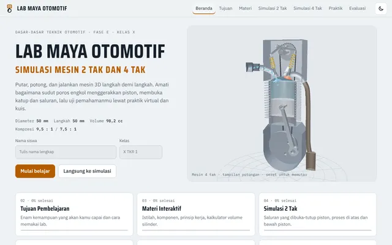
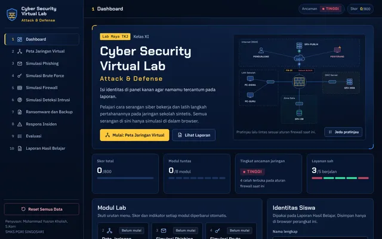
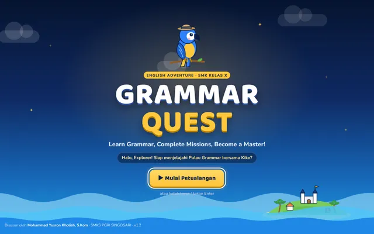
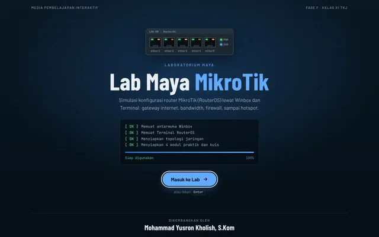
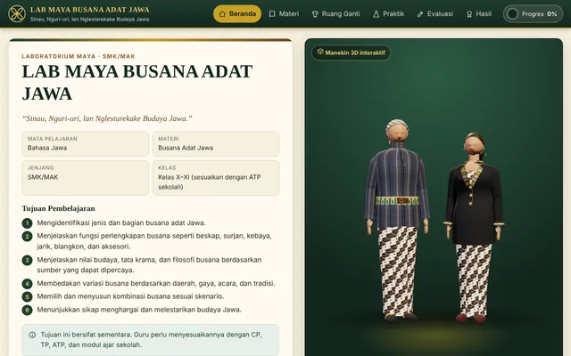
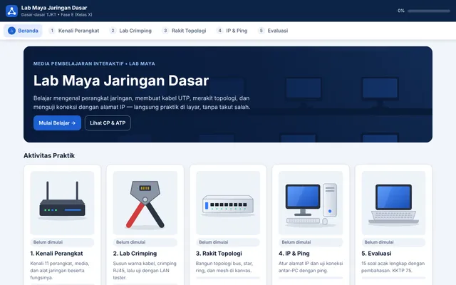
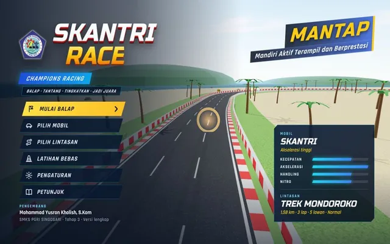
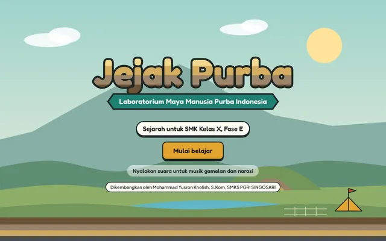

MYK Interaktif
MEDIA PEMBELAJARAN INTERAKTIF · SMK
Belajar lewat praktik, langsung dari browser.
▶ 18 karya siap pakai







13Lab maya
2Game edukasi
14Mata pelajaran

Karya guru SMKS PGRI Singosari
Mohammad Yusron Kholish, S.Kom
mykinteraktif.github.io/landingpage